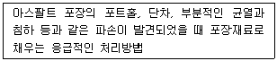
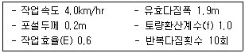
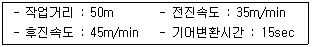
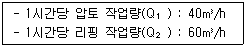
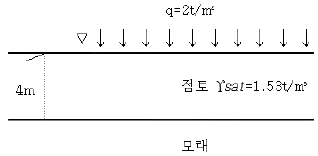

건설재료시험산업기사 (2016-10-01 기출문제)
1과목: 콘크리트공학
1. 주위의 온도가 2℃일 때, 한중콘크리트를 타설하고자 한다. 비볐을 때의 콘크리트의 온도가 22℃이었고, 비빈 후부터 타설이 끝났을 때까지 1시간이 소요되었다면, 타설이 끝났을 때의 온도는 몇 ℃ 인가? (단, 시간당 콘크리트 온도 저하율은 비볐을 때의 콘크리트 온도와 주위의 온도와의 차의 15%로 가정한다.)
- 16℃
- 17℃
- 18℃
- 20℃
(정답률: 60%)

2. 콘크리트에 강섬유를 혼입하여 강섬유콘크리트를 제조했을 때 나타나는 가장 큰 효과는 다음 중 어느 것인가?
- 시공성의 향상
- 워커빌리티의 증가
- 인장강도의 증가
- 공기량의 증가
(정답률: 88%)
3. 콘크리트의 습윤양생에 관한 설명 중 옳지 않은 것은?
- 습윤양생기간 중에 거푸집 판이 건조하더라도 살수를 해서는 안 된다.
- 막 양생을 할 경우에는 사용 전에 살포량, 시공방법 등에 관하여 시험을 통하여 충분히 검토해야 한다.
- 콘크리트는 친 후 경화를 시작할 때까지 직사광선이나 바람에 의해 수분이 증발하지 않도록 방지해야 한다.
- 습윤상태의 보호기간은 보통포틀랜드시멘트를 사용하고 일 평균기온이 15℃ 이상인 경우에는 5일간 이상을 표준으로 한다.
(정답률: 74%)
4. 30회 이상의 압축강도시험으로부터 구한 압축강도의 표준편차가 5MPa이고, 콘크리트의 설계기준 압축강도가 28MPa인 경우 배합강도는?
- 34.70 MPa
- 36.15 MPa
- 36.50 MPa
- 36.85 MPa
(정답률: 58%)
5. 품질관리의 기본 4단계에 속하지 않는 것은?
- 계획
- 준비
- 실시
- 조치
(정답률: 85%)
6. 시방배합을 현장배합으로 수정하고자 할 경우 고려해야 할 사항이 아닌 것은?
- 골재의 함수 상태
- 잔골재 중에서 5mm체에 남는 굵은 골재량
- 굵은 골재의 최대치수
- 혼화제를 희석시킨 희석수량
(정답률: 46%)
7. 고강도콘크리트에 대한 일반적인 설명으로 틀린 것은?
- 보통 중량 콘크리티인 경우 설계기준 압축강도가 40MPa이상인 콘크리트를 고강도콘크리트라 한다.
- 경량골재 콘크리트의 경우 설계기준 압축강도가 27MPa이상인 콘크리트를 고강도 콘크리트라 한다.
- 고강도콘크리트는 단위수량을 줄이기 위하여 공기연행제를 사용하는 것을 원칙으로 한다.
- 고강도콘크리트는 낮은 물-결합재비를 가지므로 철저히 습윤양생을 하여야 하며, 부득이한 경우 현장 봉합양생 등을 실시할 수 있다.
(정답률: 66%)
8. 콘크리트 휨강도 시험에서 공시체가 지간의 3등분 중앙부 파괴시 최대하중이 32kN 이었을 때 휨강도는? (단, 공시체의 크기는 150mm×150mm×530mm, 지간은 450mm)
- 3.7 MPa
- 4.0 MPa
- 4.3 MPa
- 5.0 MPa
(정답률: 56%)
9. 확대기초, 보, 기둥 등의 측면 거푸집을 해체하고자 할 때 기준이 되는 콘크리트의 강도는?
- 설계기준 압축강도의 2/3배 이상
- 14MPa 이상
- 10MPa 이상
- 5MPa 이상
(정답률: 65%)
10. 한중 콘크리트의 시공에서 콘크리트의 온도를 높이기 위하여 재료를 가열하고자 할 때 직접 가열해서는 안 되는 재료는?
- 시멘트
- 물
- 잔골재
- 굵은골재
(정답률: 74%)
11. 콘크리트의 잔골재율에 관한 설명으로 틀린 것은?
- 잔골재율은 소요의 워커빌리티를 얻을 수 있는 범위 내에서 단위수량이 최소가 되도록 정해야 한다.
- 잔골재율은 콘크리트 속에 골재 전체 중량에 대한 잔골재 전체 중량의 배분율이다.
- 잔골재율을 너무 작게 하면 콘크리트는 거칠어지고 재료 분리가 일어나는 경향이 있다.
- 공사 중 잔골재의 입도가 변화하여 조립률이 ±0.20 이상 차이가 나면 배합을 수정할 필요가 있다.
(정답률: 49%)
12. 서중 콘크리트에 대한 설명으로 틀린 것은?
- 하루 평균기온이 20℃를 초과하는 것이 예상되는 경우 서중 콘크리트로 시공하여야 한다.
- 콘크리트를 타설하기 전에는 지반, 거푸집 등 콘크리트로부터 물을 흡수할 우려가 있는 부분을 습윤상태로 유지하여야 한다.
- 콘크리트는 비빈 후 즉시 타설하여야 하며, 지연형 감수제를 사용하는 등의 일반적인 대책을 강구한 경우라도 1.5시간 이내에 타설하여야 한다.
- 콘크리트를 타설할 때의 콘크리트 온도는 35℃ 이하이어야 한다.
(정답률: 67%)
13. 보통콘크리트의 강도에 대한 일반적인 설명으로 틀린 것은?
- 콘크리트의 인장강도는 압축강도의 약 1/10 ~ 1/13 정도이다.
- 콘크리트의 휨강도는 압축강도의 약 1/5 ~ 1/8 정도이다.
- 콘크리트의 전단강도는 압축강도의 약 1/4 ~ 1/6 정도이다.
- 콘크리트의 압축에 대한 피로강도는 압축강도의 약 1/7 ~ 1/10 정도이다.
(정답률: 59%)
14. 조강포틀랜드시멘트를 사용한 콘크리트의 양생시 습윤상태의 보호기간은 최소 얼마 이상을 표준으로 하는가? (단, 일평균기온이 15℃ 이상인 경우)
- 1일
- 3일
- 5일
- 7일
(정답률: 77%)
15. 콘크리트의 알칼리골재반응을 일으키는 3가지 요소로 볼 수 없는 것은?
- 시멘트 중의 알칼리 성분
- 잔골재 중의 미립분
- 반응성 골재
- 물
(정답률: 52%)
16. 콘크리트의 비비기에 대한 설명으로 틀린 것은?
- 콘크리트의 재료는 반죽된 콘크리트가 균질하게 될 때까지 충분히 비벼야 한다.
- 비비기 시간에 대한 시험을 실시하지 않은 경우 그 최소 시간은 가경식 믹서일 때에는 1분 30초 이상을 표준으로 한다.
- 비비기는 미리 정해둔 비비기 시간의 3배 이상 계속하지 않아야 한다.
- 연속믹서를 사용할 경우, 비비기 시작 후 최초에 배출되는 콘크리트는 사용할 수 있다.
(정답률: 66%)
17. 프리플레이스트 콘크리트에 대한 설명으로 틀린 것은?(오류 신고가 접수된 문제입니다. 반드시 정답과 해설을 확인하시기 바랍니다.)
- 잔골재의 조립률은 1.4~2.2의 범위에 있는 것이 좋다.
- 초기강도는 작으나 장기강도는 보통콘크리트보다 크다.
- 블리딩 및 레이턴스가 적다.
- 굵은골재의 최대치수는 15mm로 한다.
(정답률: 54%)
18. 콘크리트의 슬럼프시험에서 슬럼프콘에 콘크리트를 채우기 시작하고 나서 슬럼프콘의 들어 올리기를 종료할 때까지의 시간은 몇 분 이내로 하여야 하는가?
- 2분
- 2분 30초
- 3분
- 3분 30초
(정답률: 74%)
19. 프리스트레스트 콘크리트에서 프리스트레싱 할 때의 콘크리트의 압축강도는 프리스트레스를 준 직 후, 콘크리트에 일어나는 최대 압축응력의 몇 배 이상이 되어야 하는가?
- 1.7배
- 2.7배
- 3.7배
- 4.7배
(정답률: 72%)
20. 일반콘크리트에서 재료의 계량 시 허용오차가 가장 큰 재료는?
- 시멘트
- 물
- 혼화재
- 골재
(정답률: 57%)
2과목: 건설재료 및 시험
21. 스트레이트 아스팔트와 비교한 고무혼입 아스팔트의 특징으로 틀린 것은?
- 감온성이 작다.
- 응집력과 부착력이 크다.
- 탄성 및 충격저항이 크다.
- 내후성 및 마찰계수가 작다.
(정답률: 57%)
22. 최근에는 화약에 의한 발파 외에 팽창성을 가진 무기 화합물을 이용하여 암석을 파쇄한다. 이러한 물질의 명칭은?
- 칼릿
- ANFO
- 비폭성파쇄제
- 니트로글리세린
(정답률: 58%)
23. 시멘트계 복합재료용 섬유 중 무기계 섬유에 포함되지 않는 것은?
- 폴리프로필렌섬유
- 강섬유
- 유리섬유
- 탄소섬유
(정답률: 54%)
24. 역청유제에 사용되는 유화제에 해당되지 않는 것은?
- 양이온계 유제
- 음이온계 유제
- 점토계 유제
- 네오프렌(neoprene) 고무 유제
(정답률: 60%)
25. 콘크리트 1m3당 용적으로 차지하는 비율이 약 70% 이며, 그 성질의 좋고 나쁨에 따라 직접 콘크리에 영향을 끼치는 재료는?
- 시멘트
- 골재
- 물
- 혼화재료
(정답률: 56%)
26. 합판에 대한 일반적인 설명으로 틀린 것은?
- 3장 이상의 단판을 3, 5, 7 등 홀수로 섬유방향이 직교하도록 접착제로 붙여 만든다.
- 단판의 제조법은 로터리 베니어, 슬라이스트 베니어, 소드 베니어 등이 있다.
- 함수율 변화에 의한 신축변형이 크고 방향성이 없다.
- 제품이 규격화되어 있어 사용하기에 편리하다.
(정답률: 68%)
27. 재료에 인장력을 주어 가늘고 길게 늘일 수 있는 성질을 무엇이라고 하는가?
- 취성
- 연성
- 강도
- 강성
(정답률: 55%)
28. 골재가 절대건조 상태에서 표면건조 포화 상태가 되기까지 흡수된 물의 양은?
- 함수량
- 흡수량
- 표면수량
- 유효흡수량
(정답률: 56%)
29. 골재의 조립률 시험에 사용되는 체가 아닌 것은?
- 80mm
- 40mm
- 25mm
- 5mm
(정답률: 65%)
30. 석재의 모양에 따른 종류에 있어서 나비가 두께의 3배 미만이고, 일정한 길이를 가지고 있는 직육면체형의 서개로 주로 구조용으로 쓰이는 것은?
- 각석
- 판석
- 견치석
- 사고석
(정답률: 53%)
31. 안산암에 대한 설명으로 부적당한 것은?
- 내구력 및 내화력이 크다.
- 큰 서개를 얻기가 용이하고 가공이 쉽다.
- 절 리가 있으므로 채석하기가 용이하다.
- 화성암석에 속하며 강도가 크다.
(정답률: 52%)
32. 다음 중에서 폭발력이 가장 강하고 수중에서도 폭발할 수 있는 다이너마이트는?
- 교질 다이너마이트
- 규조토 다이너마이트
- 분말상 다이너마이트
- 스트레이트 다이너마이트
(정답률: 80%)
33. 아스팔트 혼합물을 배합설계 할 때 측정이 필요하지 않는 것은?
- 아스팔트 평탄성
- 흐름(flow) 값
- 마샬(marshall) 안정도
- 침입도
(정답률: 32%)
34. 혼화재인 고로슬래그 미분말에 대한 설명으로 틀린 것은?
- 매스 콘크리트용으로 적합하다.
- 콘크리트의 수밀성, 화학적 저항성 등이 좋아진다.
- 알칼리 골재반응의 억제에 대한 효과가 크다.
- 혼합하는 양이 많아질수록 굳지 않는 콘크리트의 응결이 빨라진다.
(정답률: 61%)
35. 콘크리트용 혼화재인 실리카 퓸의 특징으로 틀린 것은?
- 골재화 시멘트폴 간의 결합을 좋게 하므로 고강도콘크리트에 사용된다.
- 사용량이 증가할수록 물의 양도 증가해 고성능 감수제의 사용이 필수적이다.
- 단위수량 증가, 건조수축의 증가 등의 단점이 있다.
- 규산백토, 규조토 등과 함께 천연 혼화제로 사용량이 시멘트량의 1% 이하의 액상이다.
(정답률: 40%)
36. 수화속도를 지연시켜 수화열을 적게 한 시멘트로 조기강도는 적으나 장기강도가 크며 경화수축이 적어 댐 추고나 건축용 매스콘크리트에도 사용되는 시멘트는?
- 보통포틀랜드시멘트
- 중용열포틀랜드시멘트
- 조강포틀랜드시멘트
- 백색포틀랜드시멘트
(정답률: 72%)
37. 탄성계수가 2.0×105MPa 인 강재의 응력이 300MPa 이고 강재의 길이가 10m 일 때 이 강재의 변형량은?
- 15mm
- 20mm
- 25mm
- 30mm
(정답률: 50%)
38. 다음 중 포틀랜드 시멘트의 3가지 주요성분이 아닌 것은?
- SiO2
- Al2O3
- NaCl
- CaO
(정답률: 59%)
39. 시멘트의 비중은 콘크리트의 단위 무게 계산과 배합설계 등을 위해 필요하며 또한 시멘트의 성질을 판정하는데 큰 역할을 한다. 다음 설명 중 시멘트의 비중이 작아지는 경우가 아닌 것은?
- 시멘트가 풍화했을 때
- 클링커(clinker)의 소성이 불충분할 때
- 실리카(silica)나 산화철이 많이 들어갔을 때
- 오랫동안 저장했을 때
(정답률: 57%)
40. 다음 혼화제 중 워커빌리티 증진이나 감수작용을 기대할 수 없는 것은?
- 염화칼슘(CaCl2)
- 포졸리스(Pozzolith)
- 다렉스(Darex)
- 빈졸레진(Vinsol Resin)
(정답률: 65%)
3과목: 건설시공학
41. 입상재료층에 점성이 낮은 역처애료를 살포, 침투시켜 보조기층, 기층 등의 방수성을 높이고, 기층의 모세공극을 메워 그 위에 포설하는 아스팔트 혼합물층과의 부착을 좋게 하기 위해 역청재료를 얇게 피복하는 것은?
- 실코트
- 텍코트
- 컷백 아스팔트
- 프라임코트
(정답률: 61%)
42. 네트워크 공정표 작성에 사용되는 용어에 대한 설명으로 틀린 것은?
- “더미”는 작업상호간의 연결관계만을 나타내는 명목상 작업활동을 의미한다.
- “액티비티”는 공사를 구성하는 단위로서의 작업을 의미하며 공정표 상에서 화살선으로 표시한다.
- “이벤트”는 작업과 작업간을 연결하는 단계를 의미하며 시간이나 자원을 필요로 한다.
- “선행 작업”은 어떤 작업에 있어서 선행되는 작업을 말한다.
(정답률: 60%)
43. 지하 굴착과 같이 지반보다 낮은 곳의 흙을 굴착하여 적재하는데 적당한 기계가 아닌 것은?
- 백호우
- 크램쉘
- 드레그라인
- 트랙터 쇼벨
(정답률: 50%)
44. 웰포인트 공법에서 웰포인트가 스크린 상단을 항상 계획 굴착면보다 1.0m 정도 깊게 설치하며 전체스크른을 동일레벨(level)상에 있도록 설계하는 가장 큰 이유는?
- 차수누수방지
- 공기혼입방지
- 기존기초의 보강
- 공해방지
(정답률: 61%)
45. 50000m3의 성토구간이 있다. 토사를 운반하여 성토하고자 할 때 흐트러진 토량은 얼마나 필요한가? (단, L=1.2, C=0.9 이다.)
- 45000m3
- 37500m3
- 64000m3
- 66667m3
(정답률: 61%)
46. 아스팔트 포장의 유지보수 방법 중 아래의 표에서 설명하는 것은?

- 패칭
- 재포장
- 부분 재포장
- 절삭 오버레이
(정답률: 75%)
47. TBM(Tunnel Boring Machine)공법의 특징에 대한 설명으로 틀린 것은?
- 지반의 변화에 대하여 적응하기 쉽다.
- 무진동 굴착으로 지반의 이완이 거의 없다.
- 단면이 정확하므로 여굴이 없고, 정밀 시공이 가능하다.
- 연속굴착으로 시공속도가 빠르고, 따라서 공기가 단축된다.
(정답률: 58%)
48. 댐의 기초처리 중 컨솔리데이션 그라우팅(Consolidation graouting)에 대한 설명으로 옳은 것은?
- 댐의 양안(兩岸) 접촉면 부근을 그라우팅하여 댐 주변에서의 누수를 방지한다.
- 콘크리트가 냉각하여 수축이 최대가 되었을 때 각 블록간의 이음을 그라우팅하여 댐의 일체화를 기한다.
- 기초 암반의 개량을 목적으로 기초의 표층부를 고결시켜 지지력과 수밀성을 증대시킨다.
- 지질 구조대를 통한 침투수를 차단하고 지하 지수벽을 설치하는 공법으로 기초처리 중 가장 중요하다.
(정답률: 31%)
49. 다음 중 강 말뚝의 특징에 해당되지 않는 것은?
- 이음 하기가 쉽다.
- 타입이 용이하다.
- 잘 부식되지 않는다.
- 수평 저항력이 크다.
(정답률: 48%)
50. 하저횡단 터벌공법인 침매공법이 다른 공법에 비해 좋은 점이 아닌 것은?
- 단면 형상이 비교적 자유롭고 큰 단면으로 시공할 수 있다.
- 유수가 빠른 곳에서도 침설작업이 용이하다.
- 연약지반에도 시공이 가능하며 공기를 단축시킬 수 있다.
- 육상에서 제작하므로 신뢰성이 높은 터널 본체를 만들 수 있다.
(정답률: 54%)
51. 터널 굴착방법 중 전단면 굴착공법에 대한 설명으로 틀린 것은?
- 도갱을 하지 않고 전단면을 한꺼번에 굴착하는 방법이다.
- 지질의 변화가 심한 경우나 소단면에 주로 적용된다.
- 막장이 단일하므로 작업이 비교적 단순하다.
- 작업이 굴착작업에 집중되어 있어 작업관리가 용이하다.
(정답률: 54%)
52. 다음 조건과 같은 전압식 다지기 기계의 시간당 작업량은 몇 m/hr 인가?

- 73.4
- 79.8
- 84.7
- 91.2
(정답률: 46%)
53. 방파제의 종류 중 경사제의 특징에 대한 설명으로 잘못된 것은?
- 파고가 높은 곳에 적용할 경우에도 피해가 적고, 유지보수비가 다른 종류에 비하여 가장 저렴하다.
- 연약지반에는 쇄석 자체가 기초가 되므로 경제적이다.
- 수심이 깊은 곳에서는 대형의 사석이나 블록이 필요하다.
- 시공설비와 시공법이 다른 종류에 비하여 간단하다.
(정답률: 44%)
54. 아래와 같은 불도저의 작업조건에서 싸이클타임(Cm)은?

- 1.82 min
- 2.79 min
- 3.43 min
- 4.24 min
(정답률: 64%)
55. PC말뚝의 특징으로 틀린 것은?
- 균열이 잘 생기지 않고 강선의 부식이 없어 내구성이 크다.
- 휨량이 상당히 크다.
- RC 말뚝에 비하여 고가이다.
- 이음의 시공이 쉽고 신뢰성이 크다.
(정답률: 54%)
56. 불도저로 압토와 리핑작업을 동시에 실시하며, 각 작업량이 아래의 표와 같을 때 시간당 작업량은?

- 24m3/h
- 37m3/h
- 50m3/h
- 55m3/h
(정답률: 71%)
57. QC의 7가지 도구 중 모집단에 대한 품질 특성을 알기 위하여 모집단의 분포 상태, 분포의 중심위치, 분포의 산포도를 쉽게 파악할 수 있도록 막대그래프 형식으로 작성한 도수 분포도를 무엇이라 하는가?
- 히스토그램
- 특성요인도
- 체크시트
- 산포도
(정답률: 64%)
58. 록 볼트(Rock bolt)의 역할에 대한 설명으로 틀린 것은?
- 보의 형성 작용을 한다.
- 암반의 보강 작용을 한다.
- 암반의 부착방지 작용을 한다.
- 층리에 대한 구속 작용을 한다.
(정답률: 40%)
59. 교량의 상부구조 시공시 동바리를 사용하지 않고 거푸집이 부착된 특수한 이동식 동바리를 이용하여 한 경간씩 시공해 나가는 교량가설공법은?
- FSM 공법
- FCM 공법
- ILM 공법
- MSS 공법
(정답률: 47%)
60. 콘크리트 옹벽의 적용가능 높이가 낮은 것으로부터 높은 것의 순서가 옳게 나열된 것은?
- 중력식 → 반중력식 → 부벽식 → 보강토 → 역T형
- 중력식 → 반중력식 → 역T형 → 부벽식 → 보강토
- 부벽식 → 역T형 → 중력식 → 반중력식 → 보강토
- 역T형 → 부벽식 → 반중력식 → 중력식 → 보강토
(정답률: 60%)
4과목: 토질 및 기초
61. 흙의 분류 중에서 유기질이 가장 많은 흙은?
- CH
- CL
- MH
- Pt
(정답률: 43%)
62. 3.0×3.6m인 직사각형 기초의 저면에 0.8m 및 1.0m 간격으로 지름 30cm, 길이 12m인 말뚝 9개를 무리말뚝으로 배치하였다. 말뚝 1개의 허용지지력을 25ton으로 보았을 때 무리말뚝 전체의 허용지지력을 구하면? (단, 무리말뚝의 효율(E)은 0.543 이다.)
- 122.2 ton
- 146.6 ton
- 184 ton
- 225 ton
(정답률: 34%)
63. 점성토지반의 성토 및 굴착 시 발생하는 heaving 방지대책으로 틀린 것은?
- 지반개량을 한다.
- 표토를 제거하여 하중을 적게 한다.
- 널말뚝의 근입장을 짧게 한다.
- trench cur 및 부분 굴착을 한다.
(정답률: 60%)
64. 흙의 단위 무게가 1.60t/m3, 점착력 0.32kg/cm2, 내부마찰각 30° 일 때 토층을 연직으로 절위할 수 있는 깊이는?
- 13.86m
- 12.54m
- 10.32m
- 9.76m
(정답률: 21%)
65. 다음 중 흙의 전단강도를 감소시키는 요인이 아닌 것은?(오류 신고가 접수된 문제입니다. 반드시 정답과 해설을 확인하시기 바랍니다.)
- 간극수압의 증가
- 수분증가에 의한 점토의 팽창
- 수축 팽창 등으로 인하여 생긴 미세한 균열
- 함수비 감소에 따른 흙의 단위중량 감소
(정답률: 12%)
66. 건조한 흙의 직접 전단시험 결과 수직응력이 4kg/cm2일 때 전단저항은 3kg/cm2이고 점착력은 0.5kg/cm2 이었다. 이 흙의 내부마찰각은?
- 30.2°
- 32°
- 36.8°
- 41.2°
(정답률: 31%)
67. Sand rain 공법의 주된 목적은?
- 암밀침하를 촉진시키는 것이다.
- 투수계수를 감소시키는 것이다.
- 간극수압을 증가시키는 것이다.
- 지하수위를 상승시키는 것이다.
(정답률: 45%)
68. 채취된 시료의 교란정도는 면적비를 계산하여 통상 면적비가 몇 % 이하이며 잉여토의 혼입이 불가능한 것으로 보고 불교란 시료로 간주하는가?
- 5%
- 7%
- 10%
- 15%
(정답률: 37%)
69. 표준관입시험(S.P.T)결과 N치가 25이었고, 그 때 채취한 교란시료로 입도시험을 한 결과 입자가 모나고, 입도분포가 불량할 때 Dunham 공식에 의해서 구한 내부 마찰각은?
- 약 32°
- 약 37°
- 약 40°
- 약 42°
(정답률: 47%)
70. 어떤 모래츠에서 수두가 3m일 때 한계동수경사가 1.0 이었다. 모래층의 두께가 최소 얼마를 초과하면 분사현상이 일어나지 않겠는가?
- 1.5m
- 3.0m
- 4.5m
- 6.0m
(정답률: 48%)
71. 아래 그림과 같은 지반의 점토 중앙 단면에 작용하는 유효응력은?

- 3.06 t/m2
- 3.27 t/m2
- 3.53 t/m2
- 3.71 t/m2
(정답률: 33%)
72. 예민비가 큰 점토란 다음 중 어떠한 것을 의미하는가?
- 점토를 교란시켰을 때 수축비가 큰 시료
- 점토를 교란시켰을 때 수축비가 적은 시료
- 점토를 교란시켰을 때 강도가 증가하는 시료
- 점토를 교란시켰을 때 강도가 많이 감소하는 시료
(정답률: 53%)
73. 흙속의 물이 얼어서 빙층(ice lens)이 형성되기 때문에 지표면이 떠오르는 현상은?
- 연화현상
- 동상현상
- 분사현상
- 다이러턴시(Dilatancy)
(정답률: 57%)
74. 사면안정 해석방법 중 절편법에 대한 설명으로 옳지 않은 것은?
- 절편의 바닥면은 직선이라고 가정한다.
- 일반적으로 예상 활동파괴면을 원호라고 가정한다.
- 흙 속에 간극수압이 존재하는 경우에도 적용이 가능하다.
- 지층이 여러 개의 층으로 구성되어 있는 경우 적용이 불가능하다.
(정답률: 34%)
75. 비중이 2.50, 함수비 40%인 어떤 포화토의 한계동수 경사를 구하면?
- 0.75
- 0.55
- 0.50
- 0.10
(정답률: 42%)
76. 건조밀도가 1.55g/cm3, 비중이 2.65 인 흙의 간극비는?
- 0.59
- 0.64
- 0.71
- 0.78
(정답률: 31%)
77. 연약지반 개량공법 중에서 일시적인 공법에 속하는 것은?
- Sand drain 공법
- 치환공법
- 약액주입공법
- 동결공법
(정답률: 42%)
78. 흙을 다질 때 그 효과에 대한 설명으로 틀린 것은?
- 흙의 역학적 강도와 지지력이 증가한다.
- 압축성이 작아진다.
- 흡수성이 증가한다.
- 투수성이 감소한다.
(정답률: 45%)
79. 어떤 점토시료의 압밀시험에서 시료의 두께가 29cm라고 할 때, 압밀도 50%에 도달할 때까지의 시간을 구하면? (단, 시료의 압밀계수는 2.3×10-3cm2/sec 이고, 양면배수조건이다.)
- 10.24 시간
- 5.12 시간
- 2.38 시간
- 1.19 시간
(정답률: 20%)
80. 다음 토질 시험 중 도로의 포장 두께를 정하는데 많이 사용되는 것은?
- 표준관입시험
- C.B.R 시험
- 다짐시험
- 삼축압축시험
(정답률: 56%)